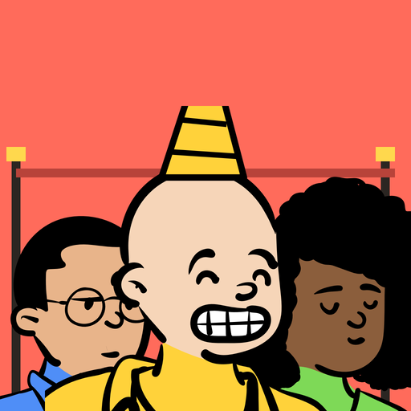

<- all projects

Queue Up
PC
Volume
Live
Everyone in line has a rule. Find the one order that makes them all happy.
You are Quinn, a professional line fixer with a brand-new business in Pettiford, the pettiest town on earth. Everyone in line has a petty rule: Mrs. Pomeroy must be first, Ada wants to stand right behind Rosa, somebody will not stand behind anyone in a hat. Drag people onto the numbered spots and watch faces change as rules are kept or broken. 300 story lines across 10 places, from the bakery at dawn to the Pie Festival, each have exactly one right order. Win over 12 town regulars and prove to Line-O-Matic, a ticket-robot company, that people can wait together happily.